Items for Sale
-
L. williamsii
AVAILABLE
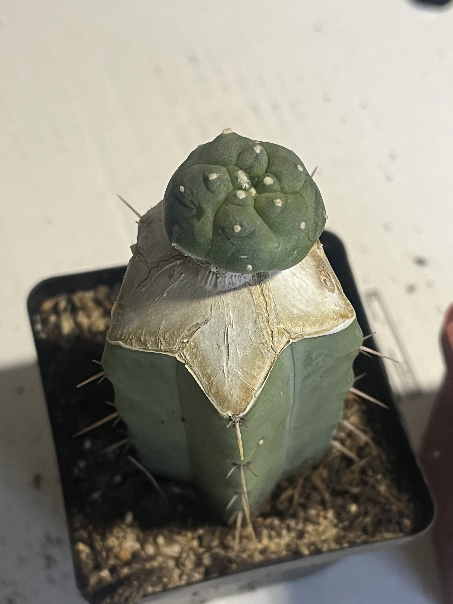Small, hemispherical, spineless, fleshy cactus with the low rounded sections bearing a tuft of yellow-white hairs at the summit. Naturally grows in gravelly clay and loam soils on gentle slopes and needs part shade.
2 cm scion
R 200
-
L. jourdaniana
AVAILABLE
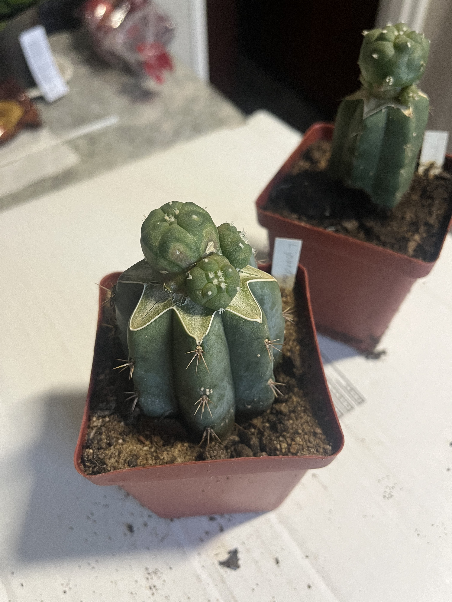Lophophora jourdaniana, commonly known as peyote, is a small, spineless cactus native to the southwestern regions of North America, particularly in Mexico and parts of Texas. It belongs to the family Cactaceae. The plant has a distinctive appearance, characterized by its rounded, button-like shape, usually greenish-gray or bluish-green in color.
2 cm scion, some with pups
R 300
-
S. heinzii
AVAILABLE
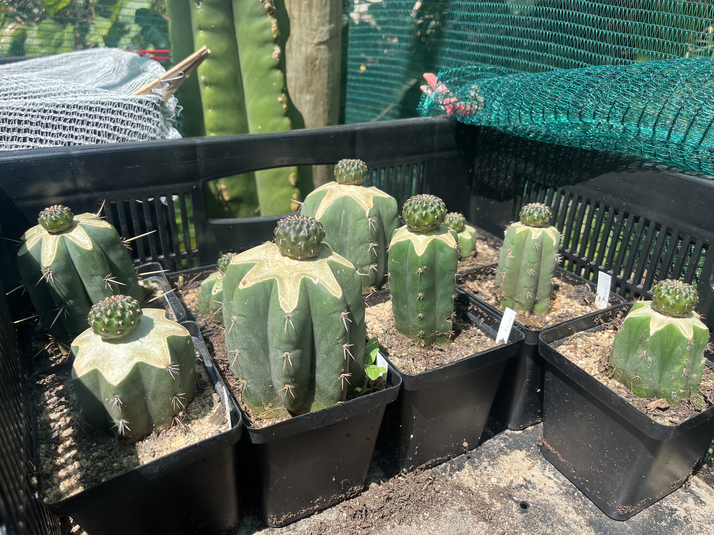Known for its vibrant colors and compact, clustered growth, this Bolivian beauty is the perfect addition to any home or garden.
2 cm scion
R 150
-
L. williamsii 'caespitosa'
AVAILABLE
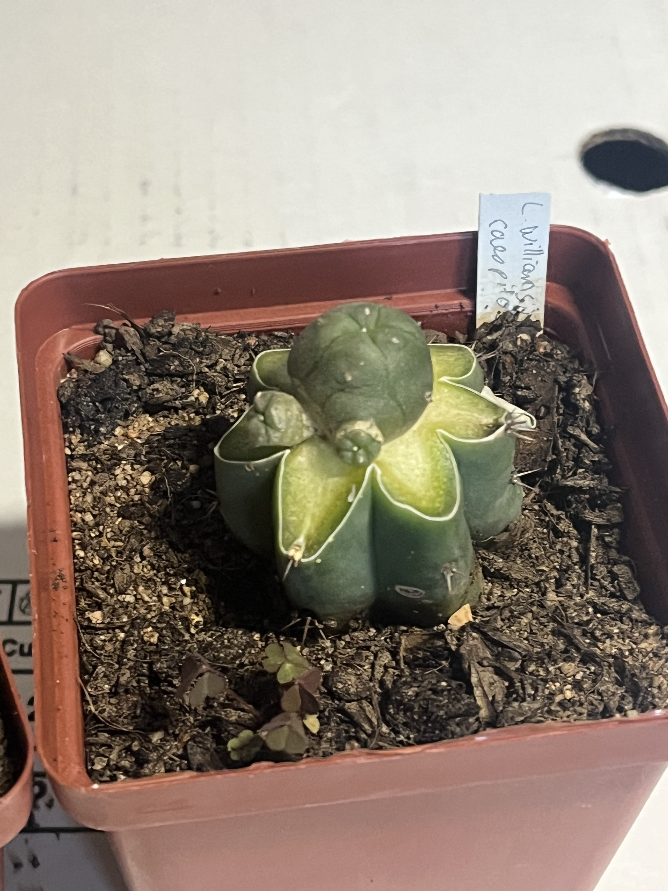2 cm scion, no pups
R 200
-
E. grusonii
AVAILABLE
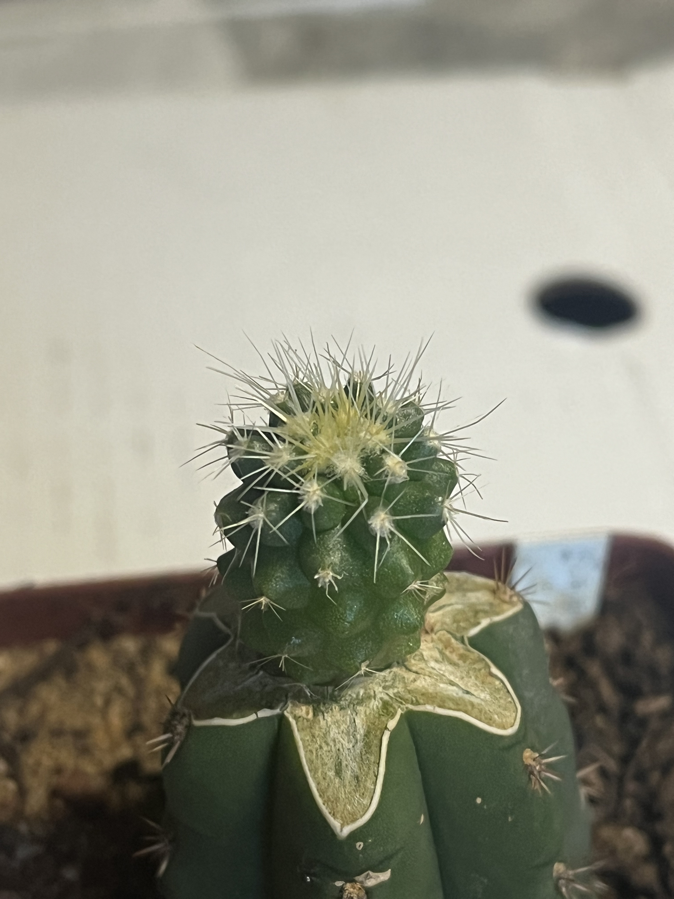Mother-in-law's cushion, is a species of barrel cactus which is endemic to east-central Mexico. It is rare and endangered in the wild, where it is found near Mesa de León in the state of Querétaro, and in the state of Hidalgo.
2 cm scion
R 100
-
M. speciosa
SOLD OUT
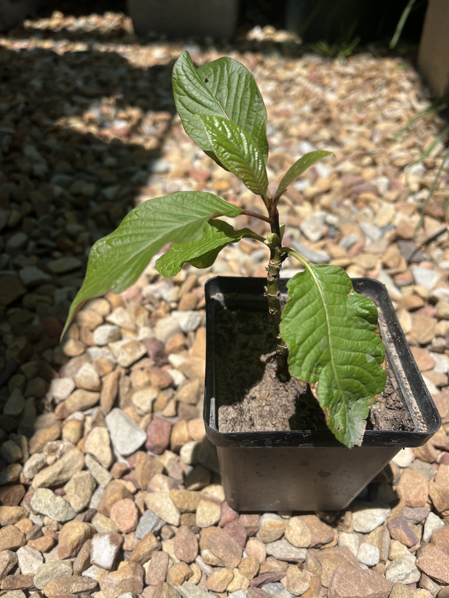Revered for its unique alkaloids, Kratom has been traditionally used for its diverse properties. Explore the potential benefits and make Kratom a part of your wellness journey.
R 350
-
S. divinorum
AVAILABLE

Dive into the fascinating realm of Salvia divinorum, a distinctive member of the mint family (Lamiaceae). Native to the cloud forests of Mexico, this perennial herb captivates botanists with its lush green leaves, square stems, and intricate flowering structures.
R 50
-
S. tortuosum
SOLD OUT
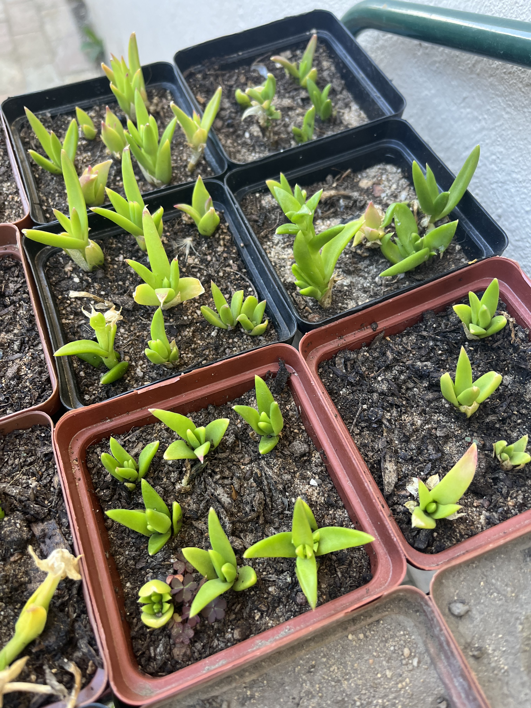An indigenous South African succulent plant with a rich cultural history. Also known as Kanna, this fascinating herb has been traditionally used for its mood-enhancing properties.
R 50
-
G. croucheri
AVAILABLE
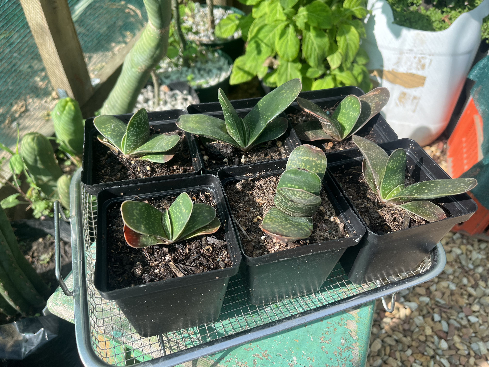Gasteria croucheri, a unique succulent hailing from the diverse landscapes of South Africa. Characterized by its rosette of thick, fleshy leaves with distinctive patterns, this botanical gem is a captivating addition to any succulent collection.
2 cm scion
R 80
-
H. coladamononis
SOLD OUT
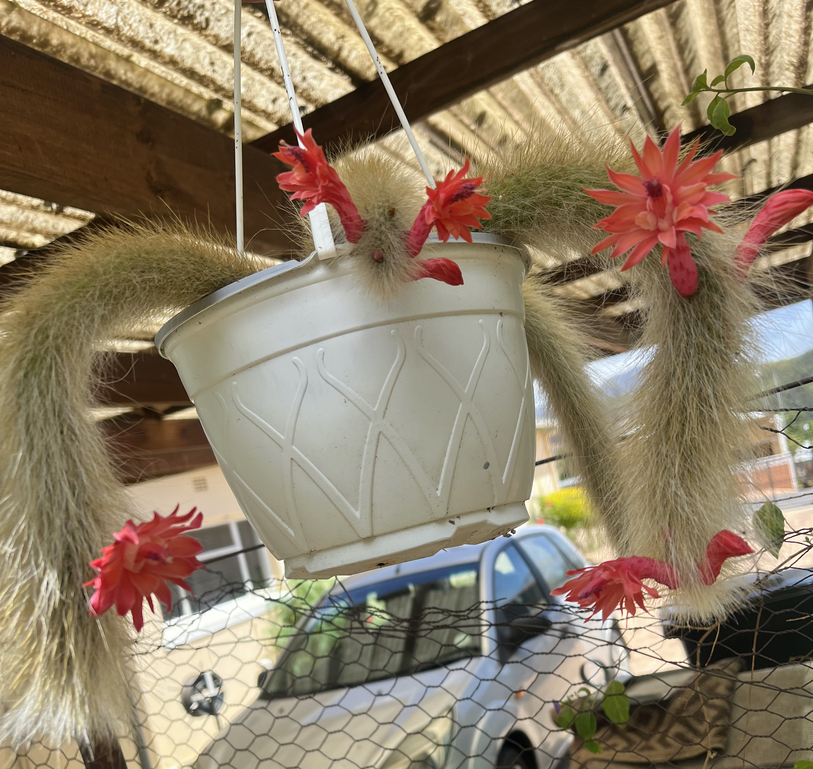Meet the captivating Monkey's Tail Cactus, scientifically known as Cleistocactus winteri. Native to the high-altitude regions of South America, this succulent marvel boasts long, trailing stems adorned with clusters of spines resembling a playful monkey's tail.
Various lengths cutting
R 200 / 15 cm
-
H. aureispina
SOLD OUT
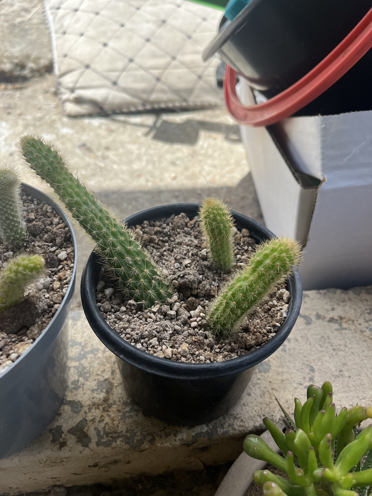Golden Rat Tail Cactus, a variety of Cleistocactus winteri. With its cascading golden-yellow stems, this succulent radiates warmth and charm. The slender, pendant-like growth adds a touch of elegance to any collection, making it a sought-after gem among succulent enthusiasts.
Various lengths cutting
R 80 / 15 cm
-
Preskiopsis spp.
SOLD OUT

Graft stock
15 cm cutting unrooted
R 5
-
Trichocereus spp.
SOLD OUT
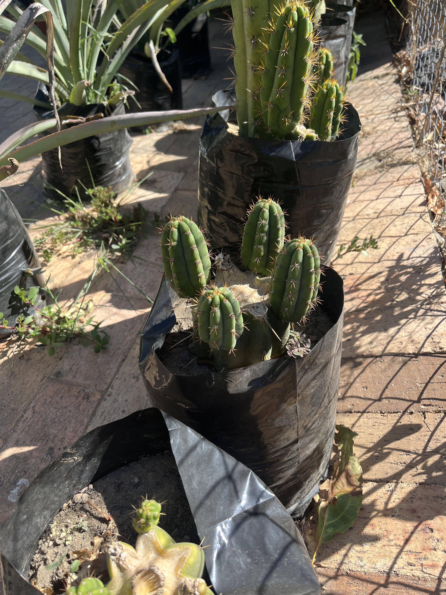Graft stock
10 cm cutting unrooted
R 20